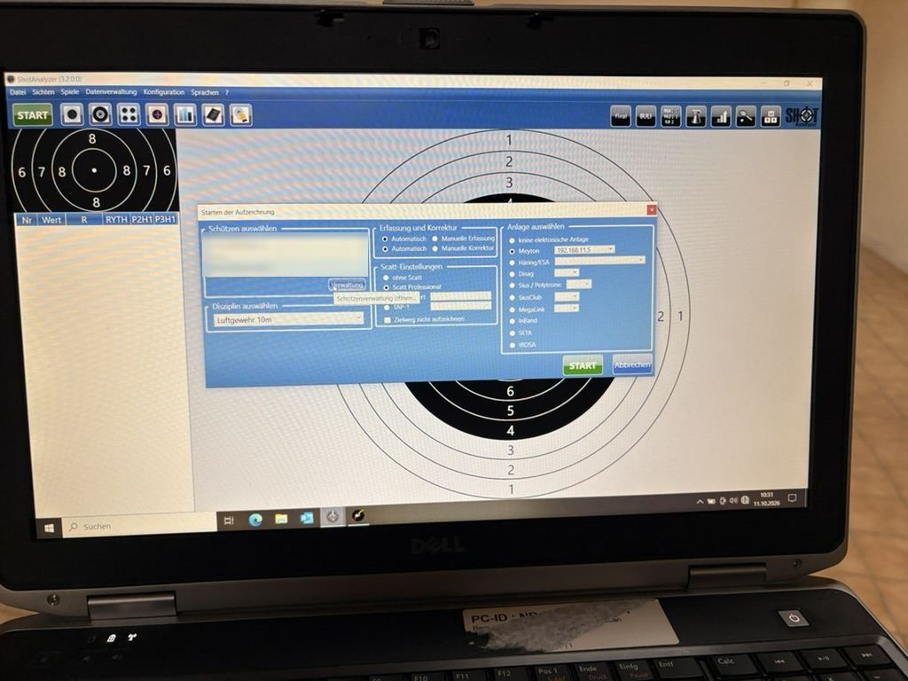

Was willst du tun?
Ablauf am Stand
1Aufbauen
Der SCATT-Rahmen hängt fest am Stand. Du holst nur Laptop, USB-Kabel und Sensor und steckst den Sensor an das Sportgerät.
2Programme starten
Erst beide Programme als Administrator öffnen. Dann in SCATT das Training beginnen und danach in ShotAnalyzer die Aufzeichnung starten.
3Neuen Schützen anlegen
Nur beim ersten Mal: Dein Name fehlt in der Liste? Leg dich einmal an, danach wählst du dich nur noch aus. Du startest das im Startfenster von ShotAnalyzer über Verwaltung.
- Auf „Neu“ klicken (1).
- Geschlecht, Vorname, Nachname und Verein eintragen, dann „Speichern“ (2).
- Mit „Schließen“ zurück zum Startfenster (3).
4Trainieren
5Abbauen
Auswerten: Farben & Kennzahlen
So liest du einen Schuss in ShotAnalyzer. Für fast alle Kennzahlen gilt: kleiner und gleichmäßiger ist besser.
Farben des Zielverlaufs
- Hellgrün Zielvorgang, der Weg ins Ziel
- Dunkelgrün die letzten 4 Sekunden vor dem Schuss
- Gelb die letzte Sekunde vor dem Schuss (Halteraum)
- Blau die letzten 0,2 Sekunden vor dem Schuss
- Rot Bewegung nach dem Schuss
- Braun 0,3 bis 1 Sekunde nach dem Schuss (Nachhalten)
- Hellblaue Gerade mittlere Richtung, aus der du ins Ziel kommst
- Lila Linie tiefster Punkt der letzten 4 Sekunden (Durchsacklinie)
Trefferfarbe: rot = 10, gelb = 9, blau = 8 und schlechter. Die Farben sind Standardwerte und können in der Konfiguration abweichen.
Spalten der Schusstabelle
| Spalte | Bedeutung | Gut ist … |
|---|---|---|
| Wert | Trefferwert in Zehnteln | hoch |
| R | Richtung, in der der Treffer von der Mitte abweicht | keine feste Richtung |
| RYTH | Zeit zwischen zwei Schüssen (Rhythmus) | gleichmäßig |
| P2H1 | Halteraum in der letzten Sekunde vor dem Schuss (mm²) | klein |
| P3H1 | Nachhalteraum 0,3–1 s nach dem Schuss (mm²) | klein |
Grün markierte Werte gehören zu den besten 20 % deiner Schüsse, rot markierte zu den schlechtesten 20 %. Die fett gedruckten Zeilen sind die Summen einer Serie. Unten rechts zeigt die Drehhilfe, wie viele Klicks und in welche Richtung du den Diopter verstellen kannst.
Einfahrbereich
Mit dem Einfahrbereich (im Handbuch auch „Annäherungsbereich“) legst du einen Korridor fest, in dem du dich der Mitte nähern sollst, z. B. stehend senkrecht von 12 Uhr. Er ist blau eingefärbt. Fährst du außerhalb davon ein, bekommst du sofort eine Rückmeldung.
- Ein- und ausschalten: mit der Schaltfläche „Einfahrbereich EIN“ oben rechts in der Scheibe.
- Mit oder ohne Ton: Mit Ton hörst du einen Signalton, sobald du den Bereich verlässt, ohne auf den Bildschirm schauen zu müssen.
- Einstellen: Der Bereich hat 8 blaue Punkte. Geh mit der Maus auf einen Punkt, bis er sich orange färbt, halte die linke Maustaste gedrückt und zieh ihn an die gewünschte Stelle. Loslassen speichert den Punkt.
- Tipp: Am einfachsten richtest du den Bereich an einem guten Schuss aus: Schuss in der Tabelle anklicken, Einfahrbereich einschalten, Punkte um den Zielverlauf legen. Fang großzügig an und mach ihn enger, wenn du sicherer einfährst.
Jede Änderung am Bereich wird sofort beim ausgewählten Schützen gespeichert. Achte also darauf, dass du selbst ausgewählt bist. Quelle: ShotAnalyzer-Handbuch, „Anleitung für den Annäherungsbereich“.
Disziplinen: idealer Zielverlauf & Fehlerbilder
Wähle deine Disziplin. Oben siehst du, wie ein guter Schuss im Zielverlauf aussieht, darunter die typischen Fehlerbilder mit Ursache und Übung. Tippe auf ▶, um einen Verlauf abzuspielen.
So wertest du einen Schuss aus (für alle Disziplinen)
- Trefferbild: Liegt die Gruppe eng, aber neben der Mitte? Dann zuerst das Visier verstellen (Drehhilfe unten rechts).
- Treffer und Halteraum: Liegt der Treffer außerhalb der gelben Wolke (P2SD groß)? Dann ist beim Auslösen etwas passiert.
- Annäherung: Kommst du immer aus derselben Richtung (hellblaue Gerade)?
- Nullpunkt: Sackt die Waffe vor dem Schuss durch (lila Linie)?
- Nachhalten: Bleibt die braune Linie dicht am Treffer (P3H1)?
- Rhythmus: Sind die langen Zielzeiten (RYTH) die schlechten Schüsse?
Pro Training nur ein bis zwei Punkte angehen und Gutes ausdrücklich bestätigen.
Die Verläufe sind schematische Beispiele, keine echten Aufzeichnungen. Alle Richtungsangaben gelten für Rechtshänder, für Linkshänder spiegelbildlich. Erster Vorschlag, fachliche Prüfung durch unsere Trainer folgt.
Spiele
Mit den Spielen trainierst du Konstanz, Druck und Wettkampfabläufe, und es macht einfach mehr Spaß. Für den Einstieg eignen sich Pyramide und Tennis.
So startest du ein Spiel
- Die Aufzeichnung muss laufen (Teil 2, Schritt „Einstellungen prüfen, START“).
- Oben rechts in der Leiste auf das Symbol des Spiels klicken (Nummern siehe Bild).
- Einstellungen wählen und auf „Neues Spiel“ klicken. Zwischen zwei Spielen ist kein STOP nötig.
Quelle: Hersteller Dot4You (dot4you.ch/schiess-spiele) und ShotAnalyzer-Handbuch. Die Einstellungsvorschläge sind Startwerte, passe sie an dein Niveau an.
Das Startfenster verstehen
Tippe auf eine Markierung. Fast alles ist schon richtig eingestellt; du wählst nur Name und Disziplin.

Wenn's hakt
SCATT findet den Sensor nicht
- Sitzt das Sensorkabel fest, am Sensor und am Laptop?
- SCATT schließen und erneut per Rechtsklick „Als Administrator ausführen“.
- Im Dialog „Training beginnen“ muss bei „Scatt verbunden mit“ ein Sensor stehen.
SCATT zeigt keinen Zielverlauf
- Zeigt die Sensoroptik zur Scheibe? Sitzt der Sensor fest in der Halterung?
- Ist der Rahmen am Stand eingeschaltet und per USB am Laptop?
ShotAnalyzer zeigt keinen Zielverlauf
- Läuft SCATT im Hintergrund mit gestartetem Training? Nur minimieren, nicht schließen.
- Wurden beide Programme per Rechtsklick „Als Administrator ausführen“ gestartet? Sonst beide schließen und so neu starten.
- Im Startfenster muss „Scatt Professional“ gewählt sein, nicht „ohne Scatt“.
„Verbindung zu Meyton“ klappt nicht
- Ist der Meyton-Stand eingeschaltet und angemeldet?
- Bitte die IP-Adresse nicht ändern. Sag einem Vorstandsmitglied Bescheid.